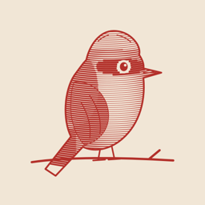
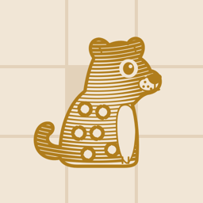

Juegos chicos, gratis y de código abierto, con sabor argentino.
Small, free, open-source games with an Argentine flavour.

Sudoku con nueve animales argentinos en lugar de números. Gratis y sin anuncios.
Sudoku with nine Argentine animals instead of numbers. Free, with no ads.
Los juegos son gratis y lo van a seguir siendo. Si te gustan, podés ayudarnos a hacer el próximo.
The games are free and will stay free. If you enjoy them, you can help us make the next one.